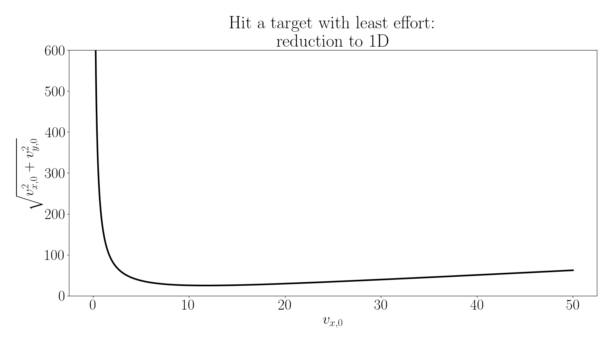

The Lazy Ape
Until now, the problem has always been framed in terms of performance: how far the banana goes, how accurately it lands, how well it matches observations. In this chapter, the objective changes. The banana must pass through a specific target point \((x^*,y^*)\). This requirement is non-negotiable.
A throw is fully characterized by two numbers \(v_{x,0}\) and \(v_{y,0}\). Among all throws that satisfy the constraint, the ape wants the least effort possible.
Effort is measured by the magnitude of the initial velocity:
This is no longer a “throw farther” problem. It is a problem of doing just enough.
Without any constraints, every \((v_{x,0},v_{y,0})\) pair defines a trajectory. The requirement that the banana must pass through the point \((x^*,y^*)\) drastically reduces this freedom. If we scan many throws and mark those that succeed, a geometric structure appears. The set of admissible initial velocities forms a curve in the \((v_{x,0},v_{y,0})\) plane. Each point on this curve corresponds to:
- a different trajectory,
- a different flight time,
- a different distribution of horizontal and vertical effort.
But all satisfy the same physical requirement: passing through the target. This visualization is crucial: it turns an abstract constraint into something concrete.

Here the black line shows all the trajectories that pass through the point \((x^*, y^*)\). The color plot shows the effort for each throw. It is just a radial plot showing the distance to the origin. Therefore, the least effort throw satisfying the constraint is the point on the black curve closest to the origin.
Reduction to 1D
Directly searching in two dimensions would be expensive and unnecessary. The key observation is that the constraint couples \(v_{x,0}\) and \(v_{y,0}\). If \(v_{x,0}\) is fixed, the trajectory’s horizontal motion is determined. Only the vertical motion remains adjustable.
This allows the problem to be decomposed:
- Choose a value of \(v_{x,0}\)
- Find the value of \(v_{y,0}\) that makes the banana pass through \((x^*,y^*)\).
This second step is no longer an optimization problem, it is a root-finding problem.


Ground truth
First we can eliminate the impact time using kinematics.
Insert this immediately into vertical motion:
Solve explicitly for (v_y):
Reduce the problem to one dimension
Differentiate \(E(v_x)\) with respect to \(v_x\), set to zero, and simplify. After cancellation, one obtains:
Hence
Substitute back into the constraint to obtain \(v_y^*\):
This is the least-effort velocity, obtained without ever optimizing over time.
Unconstrained optimization
{kind=link}
Deliverables
- Optimal initial velocity using 1D reduction (bisection inside a ternary search):
- Energy plot
- Minimum value
- Unconstrained optimization energy plot
- Discussion (no coding): will the unconstrained optimization produce the same result?